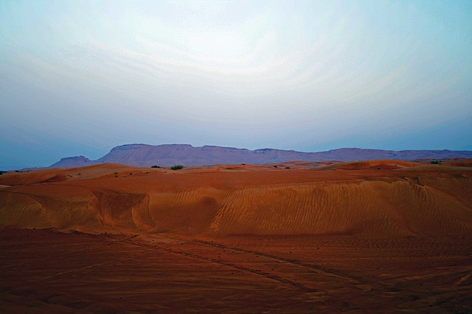
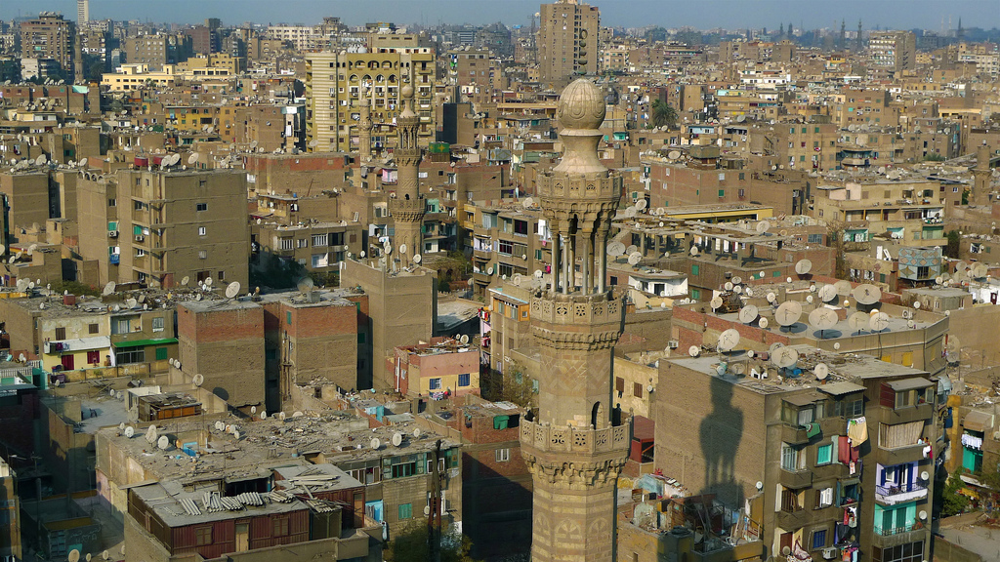

es uno de los siete emiratos que conforman los Emiratos Árabes Unidos, cuya capital es la ciudad homónima. Está situado en la costa del golfo Pérsico, en el desierto de Arabia, y limita al sur con el emirato de Abu Dabi, con el de Sharjah por el noreste y, a través del exclave de Hatta, con el Sultanato de Omán por el sureste y con los emiratos de Ajman por el oeste y Ras al-Khaimah por el norte. El entrante de agua salada del golfo Pérsico denominado Khawr Dubayy atraviesa la ciudad capital en dirección noreste-suroeste.8 Tiene una superficie total de 4114 km².2
Los primeros habitantes del emirato se dedicaban al comercio de perlas,9 una actividad en la que basarían su economía hasta el siglo xx10 y que les permitiría tener relaciones comerciales con China, India y Pakistán, principalmente. Su progreso económico y la estratégica ubicación en el golfo Pérsico11 motivó la ambición de otras naciones para apoderarse de sus rutas comerciales. En 1766, Gran Bretaña se hizo con el control de las rutas que les unían con el golfo Pérsico,12 y desde entonces Dubái pasó a constituir un protectorado del Gobierno británico, situación que prevalecería por casi dos siglos. Desde 1833 la dinastía Al Maktum gobierna el emirato. El descubrimiento de petróleo en Dubái, en los años 1960, supuso un cambio significativo en la economía y administración de Dubái. En la década siguiente se formaron los Emiratos Árabes Unidos, dando término a su relación de dependencia con el Reino Unido.10
Ante la escasa documentación existente sobre el desarrollo histórico de los EAU, no es posible determinar con certeza la etimología de las distintas regiones que conforman esta federación. La limitada información registrada procede directamente del folclore y la tradición oral.21 Se asume que el término «Dubái» puede provenir tanto del árabe como del persa22 y su uso más antiguo data del año 1095, cuando apareció en un libro del geógrafo hispanoárabe Abdullah bin Abdu Azi al-Bakri Al Andalesi.23 Si bien este nunca visitó la península arábiga, en su obra recopiló las anécdotas que otros comerciantes y viajeros le compartieron de sus viajes a este territorio,24 que el geógrafo describió solamente como «un vasto lugar». Cinco siglos después, en 1587 el comerciante italiano Gaspero Balbi utilizó la denominación «Dibei» y, de forma similar a Al Andalesi, explicó que se trataba de «un lugar extenso»23 frecuentado por venecianos que buscaban perlas en el mar.25 Algunas publicaciones británicas de la década de 1820 contienen el término «Al Wals» para designar a la región comprendida actualmente por los barrios dubaitíes de Jumeirah, Shindagha, Deira y Bur Dubai.21
Existen varias teorías con respecto a la etimología de «Dubái». El escritor Ahmad Mohammad Obaid, especializado en los distintos dialectos de los EAU, especuló que proviene de «Daba», palabra que en árabe significa «cría de langosta», y el cual es un término popular usado inclusive en un antiguo proverbio árabe.26 Sin embargo, para el historiador Faleh Handhal su verdadero origen se encuentra en la palabra «Yadub», que hace alusión al «lugar en el que un río se desliza sobre tierra firme»,21 en clara referencia a la ría Khawr Dubayy.26 Otros coinciden en que su procedencia es persa y resulta de la combinación de las palabras du —«dos»— y bradr —«hermano»—, en alusión a dos asentamientos gemelos, mientras que otra explicación incluye la forma diminutiva de la palabra Daba —«mercado»—, en alusión a la principal actividad económica de sus antiguos habitantes.27 Del nombre actual deriva su gentilicio, «dubaití».5
La información sobre los primeros asentamientos humanos en los Emiratos Árabes Unidos es escasa y únicamente se han encontrado algunos yacimientos y vestigios prehistóricos. De acuerdo con los hallazgos descubiertos, los primeros establecimientos se realizaron durante la edad de Piedra tardía, período en que el clima propiciaba la existencia de sabanas y pastizales. Las condiciones climáticas cambiaron gradualmente y, hacia el año 3000 a. C., la región adquirió las características áridas que se observan desde entonces. La línea de costa experimentó avances hacia el mar y retrocesos: para el año 2000 a. C. se retrajo hasta alcanzar la superficie que hoy ocupa Dubai Internet City. Unos cientos de años después la costa avanzó de nuevo hacia el mar, hasta llegar a la línea actual.28
Hacia el año 5500 a. C sus habitantes practicaban ya el comercio marítimo29 y el pastoreo.Nota 1 Al término del período de Wadi Suq y comienzos de la denominada Edad del Hierro,30 se observó una intensificación de la agricultura y comenzó a cultivarse la palma datilera, además de practicarse la pesca. Es posible que el progreso comercial que experimentaba la región diera lugar al establecimiento de vínculos con la civilización Magan y otras tribus ubicadas en los actuales Irak y Pakistán. Entre los productos más intercambiados se encontraban el cobre y las perlas.12 Más tarde, varias comunidades se vieron obligadas a migrar debido a la desertificación.29 Las primeras descripciones de los EAU datan de los años 932 y 948, cuando el autor Abu'l-Fraja Qudama describió un itinerario que atravesaba una zona a la que se refirió como «al-Sabkha» —trad. literal: «las salinas»—, que se extendía desde Omán hasta Basora, pasando por Catar. Es incierto si este itinerario cruzaba precisamente Dubái.25
En el primer milenio de la era común, El Cairo sustituyó a los EAU como el principal centro de intercambio comercial en Oriente, aunque el comercio marítimo seguía siendo relevante y varios asentamientos árabes contaban con puertos comerciales que les permitían importar, por ejemplo, seda y porcelana del Imperio chino.12
En Dubái existe una monarquía constitucional encabezada por la dinastía Al Maktum. Desde 2006 el emirato es gobernado por el jeque Mohamed bin Rashid Al Maktum66 y su hijo, el príncipe heredero Hamdan bin Mohamed bin Rashid Al Maktum, es responsable del desarrollo de planes estratégicos de Dubái67 y ministro de Finanzas de la federación.68 Otras de las responsabilidades políticas del jeque incluyen el cargo de vicepresidente y primer ministro de los Emiratos, así como miembro del Consejo Supremo Federal.69
La constitución política federal establece la división del poder en tres ramas —ejecutiva, legislativa y judicial—. Las dos primeras están subdivididas en una jurisdicción federal y otra local.69 En caso de ser necesario, los gobiernos locales pueden ceder algunas funciones políticas y administrativas a la federación.70 Esta última es responsable directamente de varios aspectos como la política exterior, seguridad y defensa, educación, salud pública, relaciones laborales y comunicaciones. La gestión de estos y otros aspectos está recogida en el documento Estrategia de gobierno de los EAU, publicado en 2007. Desde antes del establecimiento de los EAU, Dubái ya contaba con instituciones encargadas de velar por las necesidades de su población.71 Por ejemplo, la Municipalidad de Dubái —establecida en 1954 por el entonces jeque Rashid bin Saeed Al Maktum— se ocupa de la planificación urbana, los servicios a la ciudadanía y el mantenimiento de los servicios locales.13
El Consejo Ejecutivo de Dubái, fundado en 2003, está integrado por varias dependencias cada una de las cuales cumple con las funciones de un ministerio y es responsable de coordinar y gestionar los servicios públicos del emirato.72 Este órgano es regido por el príncipe del emirato.67 El Consejo Supremo Federal está conformado por los jeques de cada emirato, quienes eligen cada cinco años a un presidente y un vicepresidente para esa institución. Sus funciones abarcan tanto aspectos ejecutivos como legislativos.71 Finalmente, el Consejo Federal Nacional actúa como un parlamento y se rige por el principio musulmán de shura.Nota 3 Lo integran cuarenta representantes de los siete emiratos y es presidido por uno o dos voceros elegidos por los integrantes del consejo.71 Junto con Abu Dabi, es el único emirato que cuenta con derecho de veto en el consejo.69